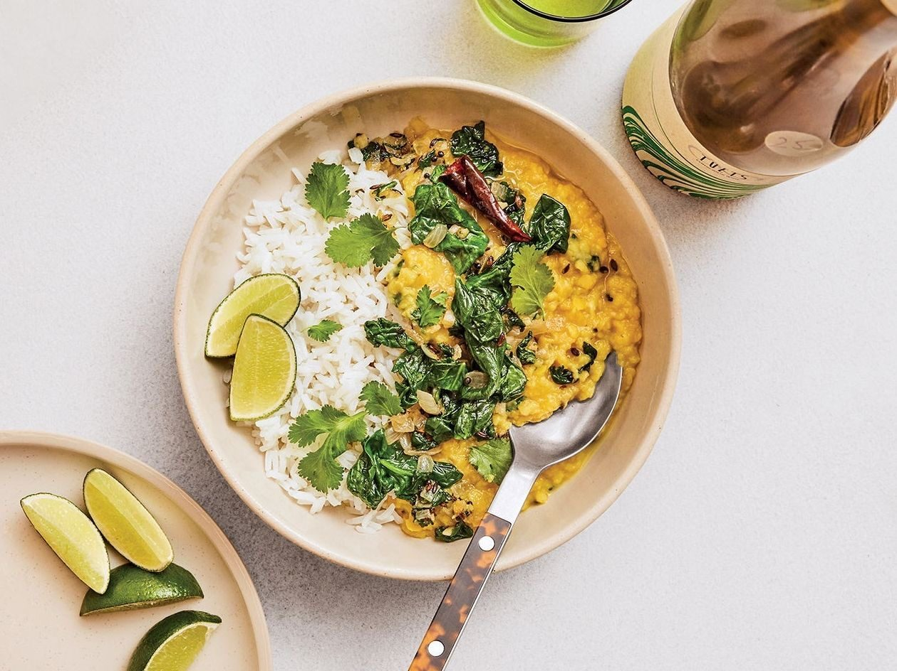

Dal Palak
A quick red lentil dal with spinach, tempered with mustard, cumin and fennel seeds.

Ingredients
Method
- Rinse the 200g red lentils in a fine-mesh sieve, then transfer to a medium saucepan with 700ml water. Bring to the boil over a medium-high heat, skimming off any foam, until it stops foaming, about 3 minutes.
- Stir in the ¼ tsp ground turmeric, reduce the heat to medium-low, partially cover, and simmer until tender, 25-30 minutes.
- Remove from the heat and squeeze in the juice from half the lime, then stir in ½ tsp of the salt.
- Meanwhile, melt the 2 tbsp ghee in a high-sided frying pan over a medium-high heat. Add the ½ tsp mustard seeds, ½ tsp cumin seeds and ½ tsp fennel seeds and cook for a few seconds, until the mustard seeds start to pop and the oil around the other seeds is sizzling.
- Reduce the heat to medium, add the 1 small dried red chilli, broken in half and stir to coat. Add the 1 small onion, coarsely chopped and cook, stirring occasionally, until translucent and softened, about 5 minutes.
- Add the 2 garlic cloves, finely chopped and 1 tsp ginger root, finely grated and cook, stirring, until fragrant, about 30 seconds.
- Add the 90g spinach, coarsely chopped and ¼ tsp of the salt and cook, stirring often, until wilted but still bright green, about 1 minute. Remove from the heat and squeeze in the juice from the remaining lime half.
- Add the spinach mixture to the dal and season with salt to taste. Divide the rice and dal among bowls, top with coriander, and serve with lime wedges.
Notes
- The source gives no time, so 40 minutes is an estimate based on the method.